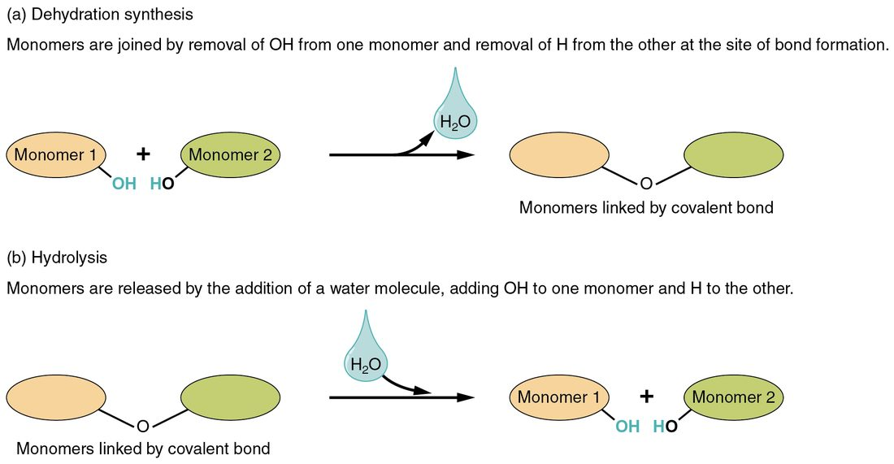

Carbohydrates, lipids, proteins and nucleic acids
1Why this matters
Jordan, 19, skips breakfast and goes for a long run. Forty minutes in she is shaky, sweaty and can't think straight: the glucose level in her blood has dropped. A teammate hands her a packet of glucose gel, and within about ten minutes she feels steady again. A granola bar would have worked more slowly. The difference comes down to how big the molecules are and what your body has to do to split them.
2What this builds on
3Quick check before you start
1. What is a covalent bond?
- A weak attraction between partial charges on neighboring molecules
- The attraction between a cation and an anion
- A pair of electrons shared between two atoms
Show the answer
In a covalent bond two atoms share a pair of electrons. It is the strong bond that holds the atoms of large body molecules together.
- A weak attraction between partial charges on neighboring molecules:
- The attraction between a cation and an anion:
- Correct: A pair of electrons shared between two atoms:
2. Why does oil separate from water instead of dissolving?
- Oil is nonpolar, and water molecules hydrogen-bond to each other and squeeze it into clusters
- Oil carries a negative charge that water repels
- Oil molecules are held together by ionic bonds that water cannot break
Show the answer
Oil is hydrophobic. Water molecules attract each other far more strongly than they attract a nonpolar molecule, so the oil is pushed into its own layer.
- Correct: Oil is nonpolar, and water molecules hydrogen-bond to each other and squeeze it into clusters:
- Oil carries a negative charge that water repels:
- Oil molecules are held together by ionic bonds that water cannot break:
3. What happens to atoms in a chemical reaction?
- Some are destroyed and new ones are created
- Bonds break and form, and the same atoms end up in new substances
- Their number of protons changes
Show the answer
A chemical reaction rearranges atoms by breaking and forming bonds. No atom is created or destroyed, and no atom changes its element.
- Some are destroyed and new ones are created:
- Correct: Bonds break and form, and the same atoms end up in new substances:
- Their number of protons changes:
4Anatomy

With labels hidden, select a box to reveal its label.
5How it works, step by step
- You eat starch, a polysaccharide made of many glucose units.Digestion adds a water molecule across each bond between the units (hydrolysis), freeing glucose monomers.
- Free glucose is small and hydrophilic.It is absorbed and dissolves directly in the liquid part of your blood, which carries it to your cells.
- After a meal, glucose reaches your liver and muscle cells in large amounts.The cells link thousands of glucose units into branched glycogen by dehydration synthesis, releasing one water molecule per new bond.
- Hours pass without food, and the glucose level in your blood starts to fall.Liver cells hydrolyze glycogen at its many branch ends and release the glucose into your blood.
- Your cells take up that glucose and break it down.The energy released rebuilds ATP from ADP and phosphate, and splitting ATP again powers muscle shortening, ion pumping and protein building.
6Core concepts
7A common mistake
The wrong idea: When a protein is denatured, it is broken down into its amino acids.
What actually happens: Denaturation changes a protein's shape, not its sequence. Heat or a change in hydrogen ion concentration breaks the weak hydrogen bonds and ionic bonds that hold the fold. The covalent peptide bonds between amino acids survive, so the chain is still whole, just unfolded and no longer able to do its job. Splitting a protein into amino acids takes hydrolysis of its peptide bonds, which is what digestion does.
8Check yourself
Anything you miss goes into your review queue.
1. A cell joins two glucose molecules into one molecule of maltose by dehydration synthesis. Besides maltose, what does the reaction produce?
- One molecule of water
- One hydrogen ion
- One molecule of carbon dioxide
- One molecule of ATP
Show the answer
Dehydration synthesis removes a hydrogen atom from one monomer and an –OH group from the other. Those three atoms leave together as one water molecule, and a new covalent bond links the two glucose units.
- Correct: One molecule of water: Correct. The H from one glucose and the –OH from the other leave as H2O, which is where the name dehydration comes from.
- One hydrogen ion: The hydrogen atom that leaves one glucose does not leave alone as an ion. It joins the –OH from the other glucose to form water.
- One molecule of carbon dioxide: No carbon leaves either glucose. Both carbon frames stay intact and are simply linked together.
- One molecule of ATP: ATP is a nucleotide that carries energy. It is not a product of joining two sugars.
2. Jordan, 19, is shaky and sweaty during a run because the glucose level in her blood has fallen. Glucose gel steadies her within minutes, faster than a starchy granola bar would. Why does the gel act faster?
- Starch is a lipid, which cannot be absorbed
- Glucose is already a monosaccharide and needs no hydrolysis
- Glucose is hydrophobic, so it slips into the blood more easily
- Starch must be denatured by heat before it can be absorbed
Show the answer
Only monosaccharides are absorbed. Starch is a polysaccharide, so digestion must first hydrolyze its many bonds to free glucose. Gel supplies free glucose that can be absorbed right away.
- Starch is a lipid, which cannot be absorbed: Starch is a carbohydrate, a polymer of glucose, not a lipid. It is absorbed once it has been split into glucose.
- Correct: Glucose is already a monosaccharide and needs no hydrolysis: Correct. A monosaccharide skips the splitting step and is absorbed directly.
- Glucose is hydrophobic, so it slips into the blood more easily: Glucose is hydrophilic: its many –OH groups attract water. That is why it dissolves directly in the liquid part of the blood.
- Starch must be denatured by heat before it can be absorbed: Denaturation is a change in protein shape. Starch has to be split into glucose by hydrolysis, not unfolded.
3. Butter is solid at room temperature, but olive oil pours. What difference in their fatty acids explains this?
- Olive oil's fatty acids carry charges that repel each other
- Olive oil's fatty acids have more double bonds, which bend the chains
- Butter's fatty acids are linked by peptide bonds
- Butter contains glycogen, which hardens it
Show the answer
Olive oil is rich in unsaturated fatty acids. Each double bond in a natural fat bends the chain, and bent chains cannot pack tightly, so the fat stays liquid. Butter is rich in saturated fatty acids, whose straight chains pack closely into a solid.
- Olive oil's fatty acids carry charges that repel each other: Fatty acid chains are nonpolar carbon and hydrogen. The difference lies in shape, not charge.
- Correct: Olive oil's fatty acids have more double bonds, which bend the chains: Correct. Double bonds put bends in the chains, and bent chains pack loosely.
- Butter's fatty acids are linked by peptide bonds: Peptide bonds join amino acids in proteins. Fatty acids are joined to glycerol, and the same kind of link occurs in both fats.
- Butter contains glycogen, which hardens it: Butter is mostly triglyceride, not glycogen. Its firmness comes from straight, saturated fatty acid chains.
4. Phospholipids dropped into water form a two-layer sheet with their heads on both outer faces and their tails inside. What drives that arrangement?
- The tails form covalent bonds with each other across the sheet
- The heads are nonpolar and are pushed out of the water
- The tails carry charges that attract the tails of the other layer
- Water bonds with the polar heads and with itself, squeezing the tails together
Show the answer
Phospholipids are amphipathic. Water molecules attract the charged, polar heads and hydrogen-bond strongly with each other, so they push the nonpolar tails together, away from water. Two layers, tails facing inward, keep every head in water and every tail out of it.
- The tails form covalent bonds with each other across the sheet: The tails of neighboring phospholipids are not covalently bonded. They cluster because water squeezes them together.
- The heads are nonpolar and are pushed out of the water: The heads are charged and polar, which is why they face the water. It is the tails that are nonpolar.
- The tails carry charges that attract the tails of the other layer: The tails are fatty acid chains of carbon and hydrogen, which carry no charges.
- Correct: Water bonds with the polar heads and with itself, squeezing the tails together: Correct. The arrangement comes from water holding on to itself and to the heads, not from the tails attracting each other strongly.
5. During a heat wave, Mr. Osei, 80, is found with a body temperature of 42 °C, measured deep in his body. Some of his proteins stop working. What has happened to those proteins?
- Weak bonds holding their folded shape broke; their sequence is unchanged
- Their peptide bonds broke, releasing free amino acids
- Their amino acids were converted into glucose
- Their side chains became nonpolar
Show the answer
Heat shakes molecules hard enough to break hydrogen bonds and other weak attractions that hold a protein's secondary, tertiary and quaternary structure. The protein unfolds (denatures) and loses its function. The covalent peptide bonds survive, so the amino acid sequence stays the same.
- Correct: Weak bonds holding their folded shape broke; their sequence is unchanged: Correct. Denaturation changes shape, not sequence, and shape is what lets a protein work.
- Their peptide bonds broke, releasing free amino acids: Peptide bonds are strong covalent bonds. Breaking them takes hydrolysis, as in digestion, not a few degrees of extra heat.
- Their amino acids were converted into glucose: Heat does not rebuild amino acids into sugars. The proteins are still present, just unfolded.
- Their side chains became nonpolar: Heat does not change the chemical makeup of side chains. It breaks the weak attractions between them.
6. Your thigh muscle shortens as you climb a stair, using energy from ATP. What happens to the ATP molecule?
- Its adenine base is removed, leaving a sugar-phosphate chain
- It gains a fourth phosphate group
- Its outer phosphate is split off by hydrolysis, leaving ADP
- It is linked to other ATP molecules to form a nucleic acid
Show the answer
Hydrolysis adds water across the bond to the outermost phosphate. That leaves ADP (adenosine diphosphate) plus a free phosphate and releases energy the cell uses for work. The cell later rebuilds ATP from ADP and phosphate.
- Its adenine base is removed, leaving a sugar-phosphate chain: The adenine and ribose stay in place. Only the outermost phosphate is removed.
- It gains a fourth phosphate group: Adding a phosphate would take energy in rather than release it. Cells release energy by removing one.
- Correct: Its outer phosphate is split off by hydrolysis, leaving ADP: Correct. ATP plus water gives ADP, phosphate and usable energy.
- It is linked to other ATP molecules to form a nucleic acid: ATP works as a single nucleotide. Its energy comes from losing a phosphate, not from joining a chain.
7. Your body stores much more energy as triglycerides than as glycogen. Which feature of triglycerides makes them the more compact long-term store?
- They dissolve easily in blood, so they are always ready to use
- They are polymers of glucose with extra branches
- They contain nitrogen, which holds extra energy
- They carry about 9 kcal per gram and are stored almost without water
Show the answer
Triglycerides are packed with carbon–hydrogen bonds, so they hold about 9 kcal per gram against about 4 for carbohydrate. Being hydrophobic, they are stored with almost no water, while glycogen holds a lot of water with it. Both facts pack more energy into each gram of stored tissue.
- They dissolve easily in blood, so they are always ready to use: Triglycerides are hydrophobic and do not dissolve in blood. Their value is compact storage, not ready solubility.
- They are polymers of glucose with extra branches: Triglycerides are glycerol plus fatty acids. Branched glucose polymers describe glycogen.
- They contain nitrogen, which holds extra energy: Triglycerides contain only carbon, hydrogen and oxygen. Their energy comes from their many carbon–hydrogen bonds.
- Correct: They carry about 9 kcal per gram and are stored almost without water: Correct. High energy per gram plus very little stored water make fat the compact long-term store.
9Summary
Most large molecules in your body are polymers built from monomers by dehydration synthesis, which releases water, and split by hydrolysis, which uses water. Carbohydrates are built from monosaccharides: glucose is the fuel your blood carries, and glycogen, a branched glucose polymer in liver and muscle, stores it. Lipids are mostly carbon and hydrogen, so they are hydrophobic: triglycerides store energy, amphipathic phospholipids form the two-layer boundary around cells, and steroids such as cholesterol are built on four carbon rings. Proteins are chains of 20 kinds of amino acid joined by peptide bonds; their sequence sets a folded shape, and the shape sets their function, which is lost when heat or a change in hydrogen ion concentration denatures them. Nucleic acids are chains of nucleotides that store and use hereditary instructions, and the nucleotide ATP releases energy for cell work when its outer phosphate is split off.